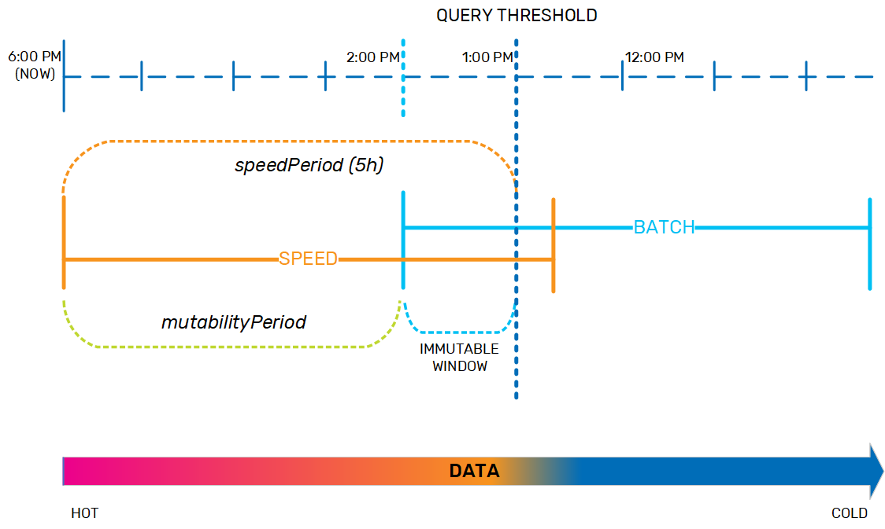
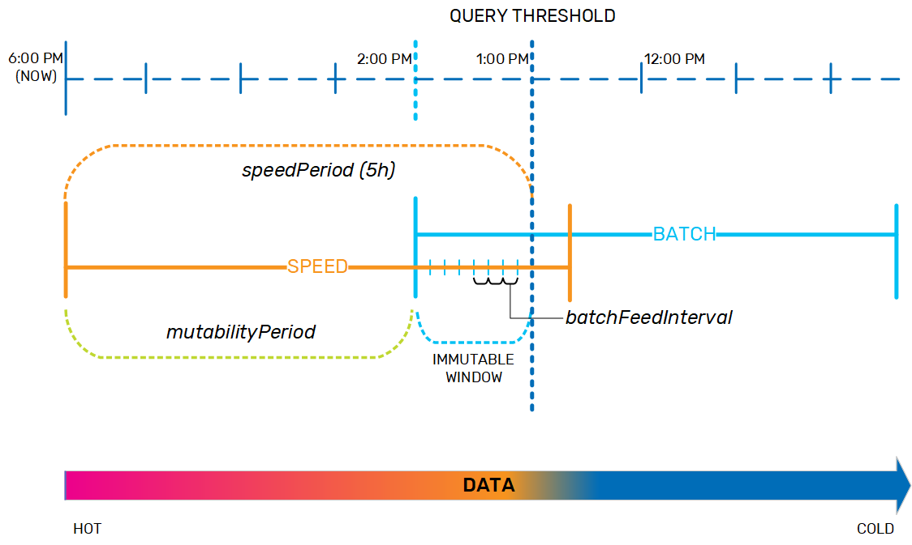

AnalyticsXtreme is a data lake accelerator that operationalizes your data lake for real-time analytics, which can run simultaneously on both real-time, mutable streaming data and on historical data that is stored on data lakes based on Hadoop, Amazon S3 or Azure Blob Storage, without exposing a separate data load procedure or data duplication. Moving from on-premise to the cloud, or changing technology stacks for example from Cloudera to Amazon S3, is seamless to machine learning applications; increasing flexibility while reducing development and maintenance.
With AnalyticsXtreme, your data is available for immediate searching, queries, and running analytics; there is a single logical view for hot, warm and cold data. The hot data resides on
This approach enables smooth access to frequently used historical data, because applications can access any data - hot or cold - via a unified layer using Spark SQL or JDBC. You can easily integrate BI tools such as Tableau, Looker, and PowerBI. It also ensures that every entry is retrieved only once, from the correct layer.
AnalyticsXtreme provides automatic life cycle management, handling the underlying data movement, optimization and deletion using an internal data life cycle policy.
AnalyticsXtreme is a time-based feature that can be used in either automatic data tiering mode, or in external data tiering mode.
In automatic data tiering mode, AnalyticsXtreme is implemented as shown above. Data is streamed to the speed layer, and from that point on it is managed by the feature's data life cycle policy as it ages and eventually gets moved to the external data source, based on the life cycle that was defined in the policy.
In external data tiering mode, data is streamed to both the

AnalyticsXtreme supports all the data formats that are supported by Apache Spark, such as Apache Parquet and Apache Avro.
AnalyticsXtreme supports Spark/SQL and JDBC for querying the speed and batch layers via the
An important function of AnalyticsXtreme is managing the life cycle of the data from the moment it is streamed to the
In order to handle this data transfer or deletion transparently, several things must to be taken into consideration. For example, the business application may trigger a query on the data at any point in time, so AnalyticXtreme needs to know where the data is located in order to successfully complete the query and return accurate results. The query may be complex, and therefore may take a relatively long time to complete. Additionally, there may be remote clients sending their queries, which means network latency needs to be taken into account. And finally, if the network connection isn't stable, the latency period may be even longer for some queries before they are finally received and executed.
The data life cycle policy was designed to handle this movement of data from the speed layer to the batch layer in a safe and predictable way. For example, we may have a system where data that is up to 5 hours old is considered hot and should be held in the speed layer, while anything older is considered cold and therefore must be moved to the batch layer. This 5-hour interval is the speedPeriod. The end of the speedPeriod is the query threshold; if a query is sent at 6 PM that requires data up to 5 hours old, the query threshold is 1 PM, and the query manager will look for the data in the speed layer only. If the query needs data that is more than 5 hours old, the query manager will look for that data in either the batch layer only, or in both the speed and batch layers and combine the results.

When the data is in the speed layer, it is dynamic and can be updated as necessary. When it is in the batch layer, the data is immutable. As the data nears the end of the speedPeriod, the data life cycle policy has to prepare for moving it to the batch layer. Therefore, the policy includes a mutabilityPeriod, during which time the data remains fully dynamic. When the data ages out of the mutabilityPeriod, it becomes immutable so that it is ready to be moved to the batch layer. By default, the mutabilityPeriod is set to 80% of the speedPeriod; looking at our example, if the speedPeriod is 5 hours, then the mutabilityPeriod is 4 hours, and data that is between 4-5 hours old is in an immutable window.

In order to keep system performance consistent, and to ensure that the data can be easily verified when it is moved between layers, if AnalyticsXtreme has been implemented in automatic data tiering mode, the data life cycle policy copies the data from the speed layer to the batch layer in small chunks as it nears the end of the immutable window, according to the batchFeedInterval. At this point, the aging data exists both in the speed layer and in the batch layer.

After the aging data is residing safely to the batch layer and the speedPeriod expires, the data needs to be evicted from the speed layer. However, since the query threshold is a sliding window, a small safety margin is needed to ensure that long-running queries can complete, and to account for network latency regarding remote clients that sent queries just before the speedPeriod expired (so the query will need the data to be located in the speed layer). This safety margin, which provides data consistency, is the evictionBuffer, and is set by default to 10 minutes.
After the data is evicted from the speed layer, it exists as historical data in the batch layer. Any queries that need data that is older than the query threshold (in this example, 1 PM) will access the batch layer only.
|
|
|
AnalyticsXtreme demo |